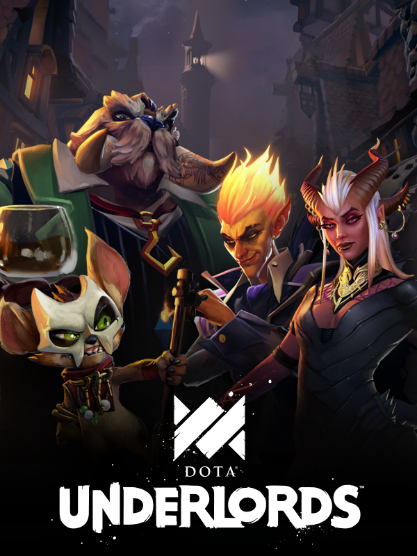

Dota Underlords
Dota Underlords
Details
|  | |
| Playtime | Not Played |
| Last Activity | Never |
| Added | 02/12/2022 9:00:10 |
| Modified | 18/05/2025 2:09:28 |
| Completion Status | Not Played |
| Library | Steam |
| Source | Steam |
| Platform | PC (Windows) |
| Release Date | 20/06/2019 |
| Community Score | 70 |
| Critic Score | |
| User Score | |
| Genre | Card & Board Game Role-playing (RPG) Strategy Tactical |
| Developer | Valve Corporation |
| Publisher | Valve Corporation |
| Feature | Multiplayer Single Player |
| Links | Steam Official Website Twitch Android Discord |
| Tag | Auto Battler Automation Board Game Card Game Casual Chess Competitive Co-op Deckbuilding Fantasy Free to Play Mature MOBA Multiplayer PvP Singleplayer Strategy Tactical Turn-Based Turn-Based Tactics |
Description
NEXT GENERATION AUTO-BATTLER
In Dota Underlords, strategic decisions matter more than twitch reflexes. Underlords includes compelling singleplayer and multiplayer modes, and offers level progression with rewards. Play a strategic Standard game, a quick Knockout match, or co-op Duos match with a friend.
SEASON ONE NOW AVAILABLE
Season One comes with a City Crawl full of content, a Battle Pass full of rewards, and multiple ways to play online or offline. Dota Underlords is now out of Early Access and ready to play!
CITY CRAWL
Mama Eeb’s death has left a power vacuum in White Spire. Take back the city neighborhood by neighborhood, Underlord by Underlord, in the new City Crawl campaign. Complete puzzle challenges, win quick street-fights, and complete in-game challenges to clear paths and take over the city. Unlock rewards like new outfits for your Underlords, new wanted poster artwork, victory dances, and titles.
BATTLEPASS
Season One comes with a full Battle Pass offering over 100 rewards. Play matches, complete challenges, and unlock areas of the City Crawl to level up your Battle Pass and earn rewards. Rewards include new boards, weather effects, profile customization, skins, and other gameplay cosmetics. Many of these rewards can be earned for free simply by playing the game. For more rewards and content, players can purchase the Battle Pass for $4.99 on all platforms. The paid Battle Pass is not required to play the game, nor does it provide any gameplay specific advantage.
WHITE SPIRE AWAITS A LEADER...
A vertical metropolis of gambling and grit, just beyond the reach of Stonehall and Revtel; White Spire is known as a smugglers' paradise with loose morals and colorful residents to spare. Despite being overrun with syndicates, gangs, and secret societies, White Spire has never descended into chaos for one reason: Momma Eeb. She was respected... she was loved... and unfortunately, she was murdered last week.
Eeb’s death has sent one question rippling through White Spire’s underworld: who is going to run the city?
STRATEGIZE TO WIN: Recruit heroes and upgrade them into more powerful versions of themselves.
MIX AND MATCH: Each hero you recruit can form unique alliances. Stacking your team with allied heroes will unlock powerful bonuses that can crush your rivals.
UNDERLORDS: Choose from four Underlords to lead your crew to victory. Underlords are powerful units who fight on the field alongside your crew, and they each bring their own playstyle, perks, and abilities to the table.
CROSSPLAY: Play on your platform of choice and battle players across the globe in a hassle-free crossplay experience. Running late? Start a match on your PC and finish it on your mobile device (and vice versa). Your profile in Dota Underlords is shared across all devices, so no matter what you play on, you're always making progress.
RANKED MATCHMAKING: Everyone starts at the bottom, but by playing against other Underlords you'll climb through the ranks and prove you're worthy to rule White Spire.
TOURNAMENT-READY: Create your own private lobbies and matches, then invite spectators to watch 8 Underlords duke it out.
OFFLINE PLAY: Offering a sophisticated AI with 4 levels of difficulty, offline play is a great place to hone your skills. Pause and resume games at your leisure.
SEASONAL ROTATION: Every season we'll say goodbye to certain Heroes, Items, and Alliances to make room for new additions that will shape the ever-evolving world of Underlords.
In Dota Underlords, strategic decisions matter more than twitch reflexes. Underlords includes compelling singleplayer and multiplayer modes, and offers level progression with rewards. Play a strategic Standard game, a quick Knockout match, or co-op Duos match with a friend.
SEASON ONE NOW AVAILABLE
Season One comes with a City Crawl full of content, a Battle Pass full of rewards, and multiple ways to play online or offline. Dota Underlords is now out of Early Access and ready to play!
CITY CRAWL
Mama Eeb’s death has left a power vacuum in White Spire. Take back the city neighborhood by neighborhood, Underlord by Underlord, in the new City Crawl campaign. Complete puzzle challenges, win quick street-fights, and complete in-game challenges to clear paths and take over the city. Unlock rewards like new outfits for your Underlords, new wanted poster artwork, victory dances, and titles.
BATTLEPASS
Season One comes with a full Battle Pass offering over 100 rewards. Play matches, complete challenges, and unlock areas of the City Crawl to level up your Battle Pass and earn rewards. Rewards include new boards, weather effects, profile customization, skins, and other gameplay cosmetics. Many of these rewards can be earned for free simply by playing the game. For more rewards and content, players can purchase the Battle Pass for $4.99 on all platforms. The paid Battle Pass is not required to play the game, nor does it provide any gameplay specific advantage.
WHITE SPIRE AWAITS A LEADER...
A vertical metropolis of gambling and grit, just beyond the reach of Stonehall and Revtel; White Spire is known as a smugglers' paradise with loose morals and colorful residents to spare. Despite being overrun with syndicates, gangs, and secret societies, White Spire has never descended into chaos for one reason: Momma Eeb. She was respected... she was loved... and unfortunately, she was murdered last week.
Eeb’s death has sent one question rippling through White Spire’s underworld: who is going to run the city?
STRATEGIZE TO WIN: Recruit heroes and upgrade them into more powerful versions of themselves.
MIX AND MATCH: Each hero you recruit can form unique alliances. Stacking your team with allied heroes will unlock powerful bonuses that can crush your rivals.
UNDERLORDS: Choose from four Underlords to lead your crew to victory. Underlords are powerful units who fight on the field alongside your crew, and they each bring their own playstyle, perks, and abilities to the table.
CROSSPLAY: Play on your platform of choice and battle players across the globe in a hassle-free crossplay experience. Running late? Start a match on your PC and finish it on your mobile device (and vice versa). Your profile in Dota Underlords is shared across all devices, so no matter what you play on, you're always making progress.
RANKED MATCHMAKING: Everyone starts at the bottom, but by playing against other Underlords you'll climb through the ranks and prove you're worthy to rule White Spire.
TOURNAMENT-READY: Create your own private lobbies and matches, then invite spectators to watch 8 Underlords duke it out.
OFFLINE PLAY: Offering a sophisticated AI with 4 levels of difficulty, offline play is a great place to hone your skills. Pause and resume games at your leisure.
SEASONAL ROTATION: Every season we'll say goodbye to certain Heroes, Items, and Alliances to make room for new additions that will shape the ever-evolving world of Underlords.